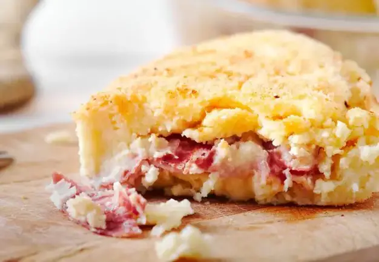

Gateau

Description
Potato gateau is a delicious dish made with potatoes and
various cold cuts.
This famous, age-old dish is a cornerstone of Neapolitan cuisine,
revisited in other regions of southern Italy.
Ingredients
- Potatoes: 3.3 lb (1.5 kg)
- Mozzarella Fior di latte: 10.58 oz (300 gr)
-
Neapolitan salami cut in thin slices: 5.29 - 7.05 oz (150 - 200 gr)
- Eggs: 4
- Salt to taste
- Pepper as needed
- Milk: 3.38 fl oz (100 ml) (half glass)
- Grated Parmigiano Reggiano: 3.53 oz (100 gr)
- Grated Pecorino Romano: 3.53 oz (100 gr)
- Grated bread to garnish
Steps
-
Boil the potatoes and mash them with a fork or with a potato masher; if
the potato is too dry, add a glass of warm milk, otherwise two
tablespoons of olive oil to facilitate processing anyway.
-
Separately beat the eggs, adding salt, pepper, Parmesan and pecorino;
add the mixture to the potatoes and mix vigorously.
-
Take a high and round (or also rectangular) baking pan, add oil, then
lay a layer of the mixture and cover with slices of salami and strips of
Fiordilatte mozzarella.
-
Form another layer in the same way, close with the potato mixture, cover
with breadcrumbs and a drizzle of oil.
- Bake in a hot oven for 30 - 40 minutes at 180°. Serve warm.